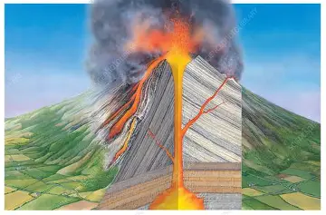
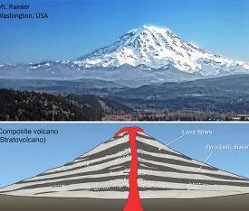

Strato Volcanoes comprise the largest percentage (~60%) of the Earth's individual volcanoes and most are characterized by eruptions of andesite and dacite – lavas that are cooler and more viscous than basalt. These more viscous lavas allow gas pressures to build up to high levels (they are effective “plugs” in the plumbing), therefore these volcanoes often suffer explosive eruptions.
| Strato volcanoes are usually about half lava and half pyroclastic material. The layering of these products gives them their other common name of composite volcanoes. These are the most famous volcano types, like Mount Fuji and Mount St. Helens. |  |
|

|
This is Mount Fuji, one of the best-known strato volcanoes in the world, located in Japan. It shows the typical conical shape formed by alternating layers of lava flows, volcanic ash, and rocks. |
The lava in strato volcanoes contains more silica, but more commonly it barely flows at all, preferring to plug in the vent to form lava domes. Some strato volcanoes are just a collection of domes piled up on each other. The silica content of the magma compositions and the trapped gases make strato volcanoes very explosive.
Examples of strato volcanoes include Mt. St. Helens, Mt. Rainier, Pinatubo, Mt. Fuji, Mt. Vesuvius, and Cotopaxi.